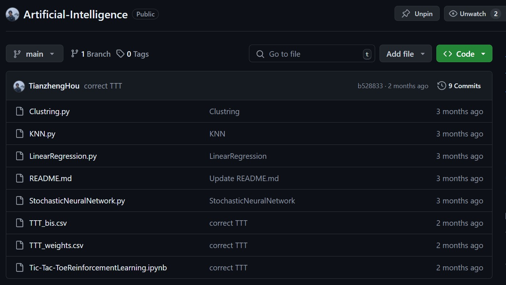

About the Project
This project demonstrates my learning and application of basic Artificial Intelligence concepts using Python, with a particular focus on leveraging NumPy for building various machine learning models. Each script is designed to explore different algorithms and methods covered during my coursework at Dalhousie University.
My interest in AI stems from a deep curiosity about how machines learn and make decisions. You can learn more about my background and interests on the About Me page.
Link To Project >>
